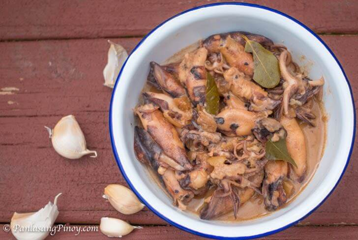

Best Filipino Recipe

Adobong Pusit (Admiral Squid)
Prep time
5 mins
Cook time
30 mins
Total time
35 mins
SERVES: 4
Ingredients
1 lb. medium sized squid, cleaned.
2 cups coconut milk.
4 tablespoons soy sauce.
3 tablespoons vinegar.
¼ teaspoon ground black pepper.
6 to 8 cloves garlic, crushed.
4 pieces dried bay leaves.
1 to 2 tablespoons fish sauce.
3 tablespoons cooking oil.
Instructions:
Heat oil in a cooking pot.
Add the garlic. Cook until it turns light brown.
Stir the squid into the pot. Partially cook the squid for 2 minutes. Remove the squid from the pot and put in a clean plate. Set aside.
Pour the coconut milk into the pot. Let boil.
Add soy sauce, vinegar, bay leaves, and ground black pepper. Cover and cook until the liquid reduces to half.
Add the squid back into the pot and then pour-in 1 teaspoon of fish sauce. Cover and continue to cook for 3 to 5 minutes.
Taste to see if the saltiness is just about right. You can add a tablespoon more of fish sauce if needed.
Transfer to a serving bowl. Serve with warm rice.
Share and enjoy!